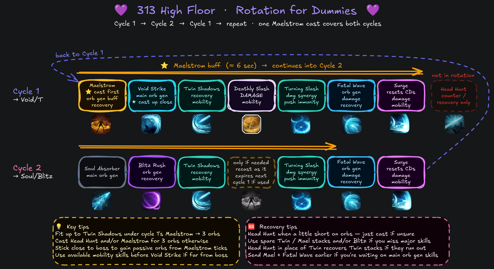

313 (High Floor) 💜¶
Best For: Players who want a simpler, faster, and more forgiving Fatal Wave build.
Tradeoff: Lower damage ceiling, but easier to recover from mistakes.
- Head Hunt is always free for counters, recovery, purify, or Adrenaline upkeep.
- Accessible from a 14p Star core as 113 (Arts), a transitional core-limited option.
- Move on to 333 (Ceiling) when you're ready, or stay here if you prefer!
Skill Codes¶
WarnBefore Importing
Make sure you've read Essentials, then apply both "Ark Passive" and "Skill" to be safe. For Gems, follow the guide.
3C737E487FD0FDB67FEB883196135CED1CE05F2123097ECB878B14A177BFE26890DDBB5C6AE3B18CB34871BBE1E17D0CC47A0DAFAE4272BEA4FD33FCF57AF2FC
E3818904D40CEFE43FC30B0715D4EF6850C4E0C2183E48110767499D73BEC3831EBB750B31176844599B47B861C731968F30681780A45447FAD8F209D8D99517
- Requires either a Lv 9+ Fatal Wave CD gem or Optimized Training 1.
- It's preferable to invest a little more and unlock 313 or 333 properly.
Ark Setup¶
TipArk Passive
- Use the Ark Passive Calculator to optimize Evolution nodes.
- Release Potential 3 / Instant Spell 3 / Awakening Amplifier 1 can solve mana issues at a minor DPS loss.
- Not as comfortable with +CD% bracelet line and/or low Specialization.
NoteArk Grid
- Raise Arts Core to 17p for increased QoL and damage when you can.
Alt113 (Arts) core-limited
- Same as 313 but without the Fatal Wave reset.
- Requires Lv 9+ Fatal Wave CD gem or Optimized Training Lv 1.
- Avoid +CD% bracelet line for this core-limited variant.
- See the Gem section for required adjustments relative to the 313 setup.
Skill Setup¶
TipRunes
- Use Legendary Galewind, Purify or Uncommon Wealth on Head Hunt if you have no mana issues.
- Legendary Focus on Maelstrom can solve major mana issues at a minor loss of orb generation.
NoteOptional
- You can bring Head Hunt down to Lv 1 and Void Strike up to Lv 14 for +0.5% DPS and lower mana use.
- However, Lv 7 is more practical and makes recovery much easier and faster. ★
- At Lv 7, Magick Control tripod can help solve mana issues if you don't need the CDR.
- Lv 4 Head Hunt (Quick Prep) with Void Strike Lv 13 is a decent overall compromise.
WarnBalance Patch
- Swift Fingers may become the default 1st row tripod for Blitz Rush.
- ~2% DPS loss but CPM and playability increases may make up for it.
- Void Strike is raised to Lv 13 and Blitz Rush is lowered to Lv 12.
- Gem priority of Void Strike and Blitz Rush is swapped.
- Needs live testing, 313 is so fast that it might not benefit fully.
- See Essentials for class-wide changes.
Gems¶
Rotation¶
Use an Opener, then alternate between these two cycles as needed:
Aim to fit up to Cycle 2's Twin Shadows under Cycle 1's Maelstrom to reach 3 orbs without recasting or using recovery options. If you only landed up to Soul Absorber, an extra Head Hunt cast is usually enough.
The Maelstrom in Cycle 2 is only cast if you'd otherwise miss 3 orbs. Use your judgment. If cast, it lasts at least until Cycle 1's Void Strike; recasting it as it expires aligns cooldowns. If it wasn't needed or it didn't last, nothing changes.
Openers stack Adrenaline and apply synergies efficiently. If it feels overwhelming, just apply synergy and Surge at full orbs; that's all you need to start the alternating cycles.
From 3 orbs ( Stimulant):
Stimulant):
- If available, Blade Assault is interchangeable with Cycle 2.
- It's efficient to use
 Atropine after Deathly Slash, with Blade Assault available.
Atropine after Deathly Slash, with Blade Assault available.
From zero/partial orbs:
- Cycle 1 if Deathly Slash is available, otherwise start from Maelstrom + Cycle 2.
- Prioritize Turning Slash earlier for synergy and Deathly Slash last for Adrenaline/RE buff.
TipRecovery Video
Watch this 2-minute 333 recovery video and read the segment titles.
- 313 plays similarly, just Turning Slash → Fatal Wave instead of FTF.
- Use Head Hunt when a little short on orbs, just cast if unsure.
- Use spare Twin Shadows/Maelstrom stacks and/or Blitz Rush if you miss major skills.
- Use Head Hunt instead of Twin Shadows for a cycle to recover stacks if they run out.
- Use Maelstrom + Fatal Wave earlier if waiting on main orb generation skills.

DPS Spread¶
Ancient cores, full Lv 10 gems